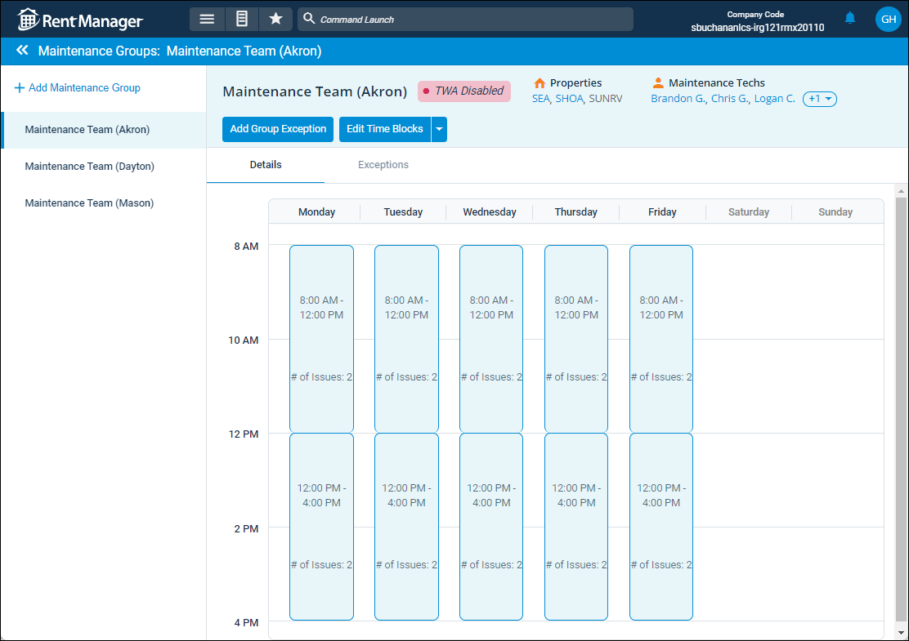

Source: https://rmxhelp.rentmanager.com/Topics/Express/CSH/Maintenance-Groups.htm
Maintenance Groups (Page)
With the Maintenance Scheduling feature, you can group properties and maintenance technicians together on one maintenance schedule, making it easier to view tech availability and schedule service visits. If you manage service issues for properties in multiple locations, you can create maintenance groups so that only techs who are associated with each property display in your scheduling calendar. The Maintenance Group page allows you to manage each group of maintenance technicians, including their availability, assigned properties, and whether or not they can be scheduled issues via Tenant Web Access (TWA). For example, if tenants are not enabled to schedule maintenance visits from Tenant Web Access, TWA Disabled is highlighted in red at the top of the page.
More Information
This feature is licensed and must be purchased separately. For more information, contact your sales representative at sales@rentmanager.com.
Related Privileges
| Group | Privilege | Column |
|---|---|---|
| Service Manager | Maintenance Groups | View, Edit |
For more information, refer to Control User Access.
To view and manage maintenance groups, go to  arrow_forward Services arrow_forward
arrow_forward Services arrow_forward  Service Setup arrow_forward Service Manager arrow_forward Maintenance Groups.
Service Setup arrow_forward Service Manager arrow_forward Maintenance Groups.

Details Tab
Each maintenance group has their own set of time blocks for when issues associated with the properties in the maintenance group can be scheduled. This page displays the time blocks during the week the maintenance groups have available scheduling hours.
Exceptions Tab
To account for the various reasons properties in a group may not be available for maintenance scheduling, such as the office being closed for holidays or maintenance techs needing to working at different locations, you can manage which days and times a group is not available to work.
The following columns are available on this tab:
| Column | Description |
|---|---|
|
Date |
The full date, including the month and day of the week, when the selected maintenance group is unavailable to work. |
|
Duration |
The time, in hours, in which the maintenance group is unavailable to work. |
|
Description |
Details regarding the reason for why the maintenance group are not available to work. |